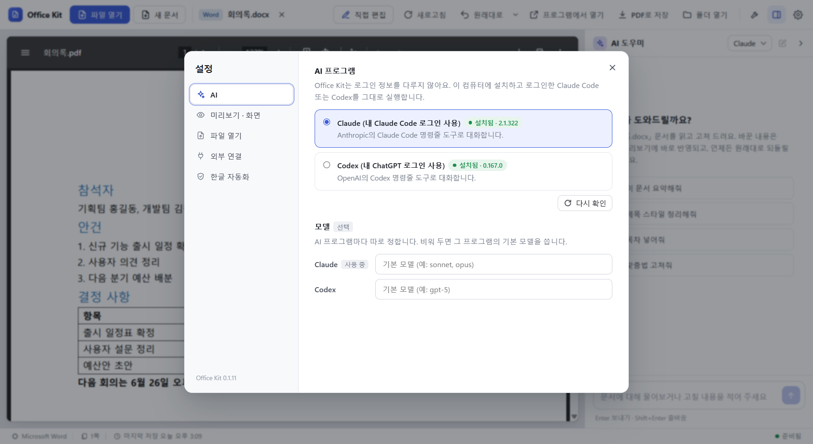

사용 안내
설치부터 자주 쓰는 기능까지 순서대로 정리했습니다. 화면의 단추 하나하나는 기능 안내에 번호를 붙여 설명했습니다.
설치
- 내려받기 페이지에서
OfficeKit-Setup-<버전>.exe를 받습니다. - 실행합니다. 관리자 권한 없이 내 계정에만 설치됩니다.
- “Windows의 PC 보호” 창이 뜨면 추가 정보를 누르고 실행을 고릅니다. 설치 파일에 코드 서명이 없어서 뜨는 경고입니다 (이유와 파일 확인 방법).
| 항목 | 내용 |
|---|---|
| 필요 | Windows 10 또는 11 (64비트) |
| AI 대화 (선택) | 직접 설치하고 로그인한 Claude Code 또는 Codex |
| 더 정확한 처리 (선택) | 한컴오피스, Word·Excel·PowerPoint. 없으면 내장 엔진으로 읽고 고칩니다. |
| 다루는 형식 | hwp hwpx hwt, docx doc rtf odt, pptx ppt odp, xlsx xls xlsm csv ods, pdf |
지울 때는 Windows 설정의 앱 목록에서 “Office Kit”을 제거합니다. 설정과 문서 버전은 %APPDATA%\office-kit에 남으니 필요 없으면 직접 지웁니다.
문서 열기
- 창에 끌어다 놓거나, 파일 열기를 누르거나, 탐색기에서 오른쪽 클릭 후 Office Kit로 열기를 고릅니다.
- 한글·Word·Excel·PowerPoint 문서는 열면 고칠 수 있는 편집 창이 바로 뜹니다. 설정의 파일 열기에서 “미리보기만”으로 바꿀 수 있습니다.
- 기본 프로그램으로 쓰려면 설정의 파일 열기에서 Windows 기본 앱 설정 열기를 눌러 형식마다 Office Kit을 고릅니다.

직접 편집
문서를 연 뒤 직접 편집(Ctrl+E)을 누르면 문서마다 편집 창이 하나 열립니다. 편집기는 앱 안에 들어 있어 인터넷 없이 동작하고, 앱 밖으로 나가는 요청은 막습니다.
한글 (hwp, hwpx)
Ctrl+S로 원래 형식 그대로 저장합니다. 덮어쓰기 전 내용은 백업으로 남습니다.

Word, Excel, PowerPoint (docx, xlsx, pptx)
형식에 따라 문서·표·슬라이드 편집 창이 열립니다. 이 PC에 설치된 글꼴을 씁니다. 매크로 문서와 옛 형식은 프로그램에서 열기로 설치된 Office에서 고칩니다.

AI 대화
오른쪽 AI 도우미 창에 할 일을 씁니다. 예: “표 2행 금액 합계 넣어줘”, “{{담당자}}를 홍길동으로 채워줘”, “이 문서 PDF로 저장해줘”.
- AI는 Office Kit 문서 도구만 씁니다. 명령 실행이나 웹 접속은 하지 않습니다.
- AI는 저장된 파일을 고칩니다. 편집 창에 저장 안 한 내용이 있으면 보내기 전에 묻습니다.

AI 프로그램 준비
Office Kit은 로그인 정보를 다루지 않습니다. 내 PC에 설치하고 로그인한 프로그램을 그대로 실행합니다.
| AI | 준비 |
|---|---|
| Claude | Claude Code를 설치하고, 터미널에서 claude를 한 번 실행해 내 계정으로 로그인 |
| Codex | npm i -g @openai/codex로 설치하고 codex login으로 내 ChatGPT 계정 로그인 |
설정의 AI에서 어느 쪽을 쓸지 고릅니다.

버전과 되돌리기
- 문서를 열 때, 편집 창에서 저장하기 전, AI가 고치기 전마다 버전을 저절로 남깁니다 (문서마다 최근 30개).
- 위쪽 원래대로는 마지막 변경 전으로 되돌립니다. 옆 ▾에서 버전 목록을 보고 원하는 때로 되돌립니다.
- 바뀐 내용은 그 버전 뒤로 바뀐 글을 빨강·초록으로 보여 줍니다. 서식과 그림 변화는 나오지 않습니다.
새 문서
새 문서(Ctrl+N)에서 형식, 이름, 저장 위치를 고르고 시작 방법을 정합니다. 빈 문서, 서식 파일(회의록, 기안문, 이력서, 예산표 등), 또는 AI에게 내용 부탁하기가 있습니다.

개인정보 가리기
위쪽 도구 단추에서 개인정보 찾아 가리기를 고릅니다. 주민·외국인등록번호, 휴대전화·전화번호, 이메일, 카드번호, 계좌번호, 여권번호, 운전면허번호를 찾습니다. 고른 것만 가린 사본을 원본 옆에 <이름>_가림으로 만듭니다.
글자 규칙으로 찾으므로 그림 속 글자나 띄어 쓴 번호는 놓칠 수 있습니다. 남에게 보내기 전에 가린 사본을 꼭 열어 확인하세요.

PDF 도구
- PDF로 저장: 한글 문서는 한컴오피스가 없어도 내장 엔진으로 저장합니다. Word·Excel·PowerPoint 문서는 그 프로그램이 있어야 합니다.
- PDF 합치기·나누기·돌리기: 여러 PDF를 하나로, 필요한 쪽만 뽑기, 쪽 지우기, 돌리기. 원본은 그대로 두고 새 파일로 저장합니다.
- 한글 → HWPX 일괄 변환: 폴더째 바꾸고, 바꾼 파일의 쪽 수·표·글이 원본과 같은지 확인합니다.

Claude Code, Claude Desktop, Codex에서 쓰기
Office Kit 문서 도구를 다른 AI 앱에 연결(MCP)할 수 있습니다. 앱 설정의 외부 연결에서 켜고 그 프로그램을 다시 시작하면 됩니다. 명령줄로도 됩니다.
office-kit setup claude-code
office-kit setup claude-desktop
office-kit setup codex
office-kit setup codex --remove설정 파일을 고칠 때마다 같은 폴더에 백업을 남깁니다. PC에 Node.js가 없어도 됩니다.
명령줄
설정의 외부 연결에서 명령줄을 켜면 새 터미널부터 office-kit을 쓸 수 있습니다.
| 명령 | 하는 일 |
|---|---|
office-kit text 보고서.hwp | 글자 출력 |
office-kit fill 신청서.hwpx 값.json -o 채움.hwpx | 칸 채우기 |
office-kit convert 보고서.hwp 보고서.pdf | 형식 변환 |
office-kit new 원고.md 새문서.hwpx | 마크다운 원고로 새 문서 |
office-kit pii 명단.xlsx --mask | 개인정보 가린 사본 |
office-kit help | 전체 도움말 |
한글 자동화 연결 (선택)
한컴오피스가 있다면 한컴의 보안 승인 모듈을 등록해 원본과 똑같은 미리보기와 PDF를 얻을 수 있습니다. 설정의 한글 자동화에서 한글 자동화 연결을 누르면 한컴 공식 저장소에서 받아 등록합니다. 이 모듈은 Office Kit에 들어 있지 않고, 단추를 눌렀을 때만 받습니다.
데이터 안내
- Office Kit 자체에는 서버가 없고 사용 기록을 모으지 않습니다. 자동 업데이트도 없습니다.
- AI 대화를 쓰면 문서 내용이 내 계정으로 Anthropic(Claude Code) 또는 OpenAI(Codex)에 전송됩니다. 각 회사의 약관과 개인정보 처리 방침을 따릅니다.
- 개인정보 가리기, PDF 도구, 직접 편집은 인터넷 없이 이 PC 안에서만 동작합니다.
알아 둘 점
- Windows 전용입니다.
- 앱 안 편집기는 한컴오피스나 Microsoft Office와 같지 않습니다. 복잡한 서식 문서는 저장 뒤 확인하거나 프로그램에서 열기로 고치세요.
- 내장 엔진의 미리보기와 PDF는 원래 프로그램과 글꼴·줄바꿈이 조금 다를 수 있습니다.
- 새 버전은 Releases에서 받아 덮어 설치합니다.
- 문제를 찾으면 GitHub Issues에 알려 주세요.